MySQL高级课程简介
| 序号 | Day01 | Day02 | Day03 | Day04 |
|---|---|---|---|---|
| 1 | Linux系统安装MySQL | 体系结构 | 应用优化 | MySQL 常用工具 |
| 2 | 索引 | 存储引擎 | 查询缓存优化 | MySQL 日志 |
| 3 | 视图 | 优化SQL步骤 | 内存管理及优化 | MySQL 主从复制 |
| 4 | 存储过程和函数 | 索引使用 | MySQL锁问题 | 综合案例 |
| 5 | 触发器 | SQL优化 | 常用SQL技巧 |
索引
索引概述
MySQL官方对索引的定义为：索引（index）是帮助MySQL高效获取数据的数据结构（有序）。在数据之外，数据库系统还维护者满足特定查找算法的数据结构，这些数据结构以某种方式引用（指向）数据， 这样就可以在这些数据结构上实现高级查找算法，这种数据结构就是索引。如下面的==示意图==所示 :

左边是数据表，一共有两列七条记录，最左边的是数据记录的物理地址（注意逻辑上相邻的记录在磁盘上也并不是一定物理相邻的）。为了加快Col2的查找，可以维护一个右边所示的二叉查找树，每个节点分别包含索引键值和一个指向对应数据记录物理地址的指针，这样就可以运用二叉查找快速获取到相应数据。
一般来说索引本身也很大，不可能全部存储在内存中，因此索引往往以索引文件的形式存储在磁盘上。索引是数据库中用来提高性能的最常用的工具。
索引优势劣势
优势
1） 类似于书籍的目录索引，提高数据检索的效率，降低数据库的IO成本。
2） 通过索引列对数据进行排序，降低数据排序的成本，降低CPU的消耗。
劣势
1） 实际上索引也是一张表，该表中保存了主键与索引字段，并指向实体类的记录，所以索引列也是要占用空间的。
2） 虽然索引大大提高了查询效率，同时却也降低更新表的速度，如对表进行INSERT、UPDATE、DELETE。因为更新表时，MySQL 不仅要保存数据，还要保存一下索引文件每次更新添加了索引列的字段，都会调整因为更新所带来的键值变化后的索引信息。
索引结构
索引是在MySQL的存储引擎层中实现的，而不是在服务器层实现的。所以每种存储引擎的索引都不一定完全相同，也不是所有的存储引擎都支持所有的索引类型的。MySQL目前提供了以下4种索引：
- BTREE 索引 ： 最常见的索引类型，大部分索引都支持 B 树索引。
- HASH 索引：只有Memory引擎支持 ， 使用场景简单 。
- R-tree 索引（空间索引）：空间索引是MyISAM引擎的一个特殊索引类型，主要用于地理空间数据类型，通常使用较少，不做特别介绍。
- Full-text （全文索引） ：全文索引也是MyISAM的一个特殊索引类型，主要用于全文索引，InnoDB从Mysql5.6版本开始支持全文索引。
| 索引 | InnoDB引擎 | MyISAM引擎 | Memory引擎 |
|---|---|---|---|
| BTREE索引 | 支持 | 支持 | 支持 |
| HASH 索引 | 不支持 | 不支持 | 支持 |
| R-tree 索引 | 不支持 | 支持 | 不支持 |
| Full-text | 5.6版本之后支持 | 支持 | 不支持 |
我们平常所说的索引，如果没有特别指明，都是指B+树（多路搜索树，并不一定是二叉的）结构组织的索引。其中聚集索引、复合索引、前缀索引、唯一索引默认都是使用 B+tree 索引，统称为 索引。
BTREE 结构
BTree又叫多路平衡搜索树，一颗m叉的BTree特性如下：
- 树中每个节点最多包含m个孩子。
- 除根节点与叶子节点外，每个节点至少有[ceil(m/2)]个孩子。
- 若根节点不是叶子节点，则至少有两个孩子。
- 所有的叶子节点都在同一层。
- 每个非叶子节点由n个key与n+1个指针组成，其中[ceil(m/2)-1] <= n <= m-1
以5叉BTree为例，key的数量：公式推导[ceil(m/2)-1] <= n <= m-1。所以 2 <= n <=4 。当n>4时，中间节点分裂到父节点，两边节点分裂。
插入 C N G A H E K Q M F W L T Z D P R X Y S 数据为例。
演变过程如下：
1). 插入前4个字母 C N G A

2). 插入H，n>4，中间元素G字母向上分裂到新的节点

3). 插入E，K，Q不需要分裂

4). 插入M，中间元素M字母向上分裂到父节点G

5). 插入F，W，L，T不需要分裂

6). 插入Z，中间元素T向上分裂到父节点中

7). 插入D，中间元素D向上分裂到父节点中。然后插入P，R，X，Y不需要分裂

8). 最后插入S，NPQR节点n>5，中间节点Q向上分裂，但分裂后父节点DGMT的n>5，中间节点M向上分裂

到此，该BTREE树就已经构建完成了， BTREE树 和 二叉树 相比， 查询数据的效率更高， 因为对于相同的数据量来说，BTREE的层级结构比二叉树小，因此搜索速度快。
B+TREE 结构
B+Tree为BTree的变种，B+Tree与BTree的区别为：
1). n叉B+Tree最多含有n个key，而BTree最多含有n-1个key。
2). B+Tree的叶子节点保存所有的key信息，依key大小顺序排列。
3). 所有的非叶子节点都可以看作是key的索引部分。

由于B+Tree只有叶子节点保存key信息，查询任何key都要从root走到叶子。所以B+Tree的查询效率更加稳定。
MySQL中的B+Tree
MySql索引数据结构对经典的B+Tree进行了优化。在原B+Tree的基础上，增加一个指向相邻叶子节点的链表指针，就形成了带有顺序指针的B+Tree，提高区间访问的性能。
MySQL中的 B+Tree 索引结构示意图:

索引分类
1） 单值索引 ：即一个索引只包含单个列，一个表可以有多个单列索引
2） 唯一索引 ：索引列的值必须唯一，但允许有空值
3） 复合索引 ：即一个索引包含多个列
索引语法
索引在创建表的时候，可以同时创建， 也可以随时增加新的索引。
准备环境:
1 | create database demo_01 default charset=utf8mb4; |
创建索引
Unique 唯一索引
语法 ：
1 | -- Unique 唯一索引,Full Text 全文索引,SPATIAL 空间索引 |
示例 ： 为city表中的city_name字段创建索引 ；

查看索引
语法：
1 | show index from table_name; |
示例：查看city表中的索引信息；


删除索引
语法 ：
1 | DROP INDEX index_name ON tbl_name; |
示例 ： 想要删除city表上的索引idx_city_name，可以操作如下：
ALTER命令
1 | 1). alter table tb_name add primary key(column_list); |
索引设计原则
索引的设计可以遵循一些已有的原则，创建索引的时候请尽量考虑符合这些原则，便于提升索引的使用效率，更高效的使用索引。
对查询频次较高，且数据量比较大的表建立索引。
索引字段的选择，最佳候选列应当从where子句的条件中提取，如果where子句中的组合比较多，那么应当挑选最常用、过滤效果最好的列的组合。
使用唯一索引，区分度越高，使用索引的效率越高。
索引可以有效的提升查询数据的效率，但索引数量不是多多益善，索引越多，维护索引的代价自然也就水涨船高。对于插入、更新、删除等DML操作比较频繁的表来说，索引过多，会引入相当高的维护代价，降低DML操作的效率，增加相应操作的时间消耗。另外索引过多的话，MySQL也会犯选择困难病，虽然最终仍然会找到一个可用的索引，但无疑提高了选择的代价。
使用短索引，索引创建之后也是使用硬盘来存储的，因此提升索引访问的I/O效率，也可以提升总体的访问效率。假如构成索引的字段总长度比较短，那么在给定大小的存储块内可以存储更多的索引值，相应的可以有效的提升MySQL访问索引的I/O效率。
复合索引的使用遵循最左匹配原则，只有索引左边的列匹配到，后面的列才能继续匹配。利用最左前缀，N个列组合而成的组合索引，那么相当于是创建了N个索引，如果查询时where子句中使用了组成该索引的前几个字段，那么这条查询SQL可以利用组合索引来提升查询效率。
1 | 创建复合索引: |
视图
视图概述
视图（View）是一种虚拟存在的表。视图并不在数据库中实际存在，行和列数据来自定义视图的查询中使用的表，并且是在使用视图时动态生成的。通俗的讲，视图就是一条SELECT语句执行后返回的结果集。所以我们在创建视图的时候，主要的工作就落在创建这条SQL查询语句上。
视图相对于普通的表的优势主要包括以下几项。
- 简单：使用视图的用户完全不需要关心后面对应的表的结构、关联条件和筛选条件，对用户来说已经是过滤好的复合条件的结果集。
- 安全：使用视图的用户只能访问他们被允许查询的结果集，对表的权限管理并不能限制到某个行某个列，但是通过视图就可以简单的实现。
- 数据独立：一旦视图的结构确定了，可以屏蔽表结构变化对用户的影响，源表增加列对视图没有影响；源表修改列名，则可以通过修改视图来解决，不会造成对访问者的影响。
创建或者修改视图
创建视图的语法为：
1 | CREATE [OR REPLACE] [ALGORITHM = {UNDEFINED | MERGE | TEMPTABLE}] |
1）OR REPLACE：表示替换已有视图
2）ALGORITHM：表示视图选择算法，默认算法是UNDEFINED(未定义的)：MySQL自动选择要使用的算法 ；merge合并；temptable临时表
3）select_statement：表示select语句
4）[WITH [CASCADED | LOCAL] CHECK OPTION]：表示视图在更新时保证在视图的权限范围之内
TIPS：推荐使用WHIT [CASCADED|LOCAL] CHECK OPTION选项，可以保证数据的安全性
- WITH CASCADED CHECK OPTION：检查所有的视图
例如：嵌套视图及其底层的视图 - WITH LOCAL CHECK OPTION：只检查将要更新的视图本身
对嵌套视图不检查其底层的视图
修改视图的语法为：
1 | ALTER [ALGORITHM = {UNDEFINED | MERGE | TEMPTABLE}] |
1 | 选项 : |
示例 , 创建city_country_view视图 , 执行如下SQL :
1 | create or replace view city_country_view |
查询视图 :

查看视图
从 MySQL 5.1 版本开始，使用 SHOW TABLES 命令的时候不仅显示表的名字，同时也会显示视图的名字，而不存在单独显示视图的 SHOW VIEWS 命令。

同样，在使用 SHOW TABLE STATUS 命令的时候，不但可以显示表的信息，同时也可以显示视图的信息。

如果需要查询某个视图的定义，可以使用 SHOW CREATE VIEW 命令进行查看 ：

删除视图
语法 :
1 | DROP VIEW [IF EXISTS] view_name [, view_name] ...[RESTRICT | CASCADE] |
示例 , 删除视图city_country_view :
1 | DROP VIEW city_country_view ; |
存储过程和函数
存储过程和函数是 事先经过编译并存储在数据库中的一段 SQL 语句的集合，调用存储过程和函数可以简化应用开发人员的很多工作，减少数据在数据库和应用服务器之间的传输，对于提高数据处理的效率是有好处的。
存储过程和函数的区别在于函数必须有返回值，而存储过程没有。
- 函数 ： 是一个有返回值的过程 ；
- 过程 ： 是一个没有返回值的函数 ；
创建存储过程
1 | CREATE PROCEDURE procedure_name ([proc_parameter[,...]]) |
DELIMITER该关键字用来声明SQL语句的分隔符 , 告诉 MySQL 解释器，该段命令是否已经结束了，mysql是否可以执行了。默认情况下，delimiter是分号;。在命令行客户端中，如果有一行命令以分号结束，那么回车后，mysql将会执行该命令。
调用存储过程
call procedure_name() ;
查看存储过程
1 | -- 查询db_name数据库中的所有的存储过程 |
删除存储过程
DROP PROCEDURE [IF EXISTS] sp_name ；
语法
存储过程是可以编程的，意味着可以使用变量，表达式，控制结构，来完成比较复杂的功能。
变量
DECLARE
通过 DECLARE 可以定义一个局部变量，该变量的作用范围只能在 BEGIN…END 块中。
DECLARE var_name[,…] type [DEFAULT value]
1 | delimiter $ |
SET
直接赋值使用 SET，可以赋常量或者赋表达式，具体语法如下：
SET var_name = expr [, var_name = expr] …
1 | DELIMITER $ |
也可以通过select … into 方式进行赋值操作 :
1 | DELIMITER $ |
if条件判断
语法结构 :
1 | if search_condition then statement_list |
需求
1 | 根据定义的身高变量，判定当前身高的所属的身材类型 |
1 | delimiter $ |
传递参数
语法格式 :
1 | create procedure procedure_name([in/out/inout] 参数名 参数类型) |
IN - 输入
需求:根据定义的身高变量，判定当前身高的所属的身材类型
1 | delimiter $ |
OUT-输出
需求:根据传入的身高变量，获取当前身高的所属的身材类型
示例:
1 | create procedure pro_test5(in height int , out description varchar(100)) |
调用:
1 | call pro_test5(168, @description)$ |
- @description : 这种变量要在变量名称前面加上“@”符号，叫做用户会话变量，代表整个会话过程他都是有作用的，这个类似于全局变量一样。
- @@global.sort_buffer_size : 这种在变量前加上 “@@” 符号, 叫做 系统变量
case结构
语法结构
1 | -- 方式一 : |
需求:给定一个月份, 然后计算出所在的季度
示例 :
1 | delimiter $ |
while循环
语法结构:
1 | while search_condition do |
需求：计算从1加到n的值
示例 :
1 | delimiter $ |
repeat结构
有条件的循环控制语句, 当满足条件的时候退出循环 。while 是满足条件才执行，repeat 是满足条件就退出循环。
语法结构 :
1 | REPEAT |
需求: 计算从1加到n的值
示例:
1 | delimiter $ |
loop语句
LOOP 实现简单的循环，退出循环的条件需要使用其他的语句定义，通常可以使用 LEAVE 语句实现，具体语法如下：
1 | [begin_label:] LOOP |
如果不在 statement_list 中增加退出循环的语句，那么 LOOP 语句可以用来实现简单的死循环。
leave语句
用来从标注的流程构造中退出，通常和 BEGIN … END 或者循环一起使用。下面是一个使用 LOOP 和 LEAVE 的简单例子 , 退出循环：
1 | delimiter $ |
游标/光标
游标是用来存储查询结果集的数据类型 , 在存储过程和函数中可以使用光标对结果集进行循环的处理。光标的使用包括光标的声明、OPEN、FETCH 和 CLOSE，其语法分别如下。
声明光标：
1 | DECLARE cursor_name CURSOR FOR select_statement ; |
OPEN 光标：
1 | OPEN cursor_name ; |
FETCH 光标：
1 | FETCH cursor_name INTO var_name [, var_name] ... |
CLOSE 光标：
1 | CLOSE cursor_name ; |
示例：
1 | create table emp( |
1 | -- 查询emp表中数据, 并逐行获取进行展示 |
通过循环结构 , 获取游标中的数据 :
1 | DELIMITER $ |
存储函数
语法结构:
1 | CREATE FUNCTION function_name([param type ... ]) |
案例 : 定义一个存储过程, 请求满足条件的总记录数 ;
1 | delimiter $ |
调用:
1 | select count_city(1); |
触发器
触发器是与表有关的数据库对象，指在 insert/update/delete 之前或之后，触发并执行触发器中定义的SQL语句集合。触发器的这种特性可以协助应用在数据库端确保数据的完整性 , 日志记录 , 数据校验等操作 。
使用别名 OLD 和 NEW 来引用触发器中发生变化的记录内容，这与其他的数据库是相似的。现在触发器还只支持行级触发，不支持语句级触发。
| 触发器类型 | NEW 和 OLD的使用 |
|---|---|
| INSERT 型触发器 | NEW 表示将要或者已经新增的数据 |
| UPDATE 型触发器 | OLD 表示修改之前的数据 , NEW 表示将要或已经修改后的数据 |
| DELETE 型触发器 | OLD 表示将要或者已经删除的数据 |
创建触发器
语法结构 :
1 | create trigger trigger_name |
示例：通过触发器记录 emp 表的数据变更日志 , 包含增加, 修改 , 删除 ;
首先创建一张日志表 :
1 | create table emp_logs( |
创建 insert 型触发器，完成插入数据时的日志记录 :
1 | DELIMITER $ |
创建 update 型触发器，完成更新数据时的日志记录 :
1 | DELIMITER $ |
创建delete 行的触发器 , 完成删除数据时的日志记录 :
1 | DELIMITER $ |
测试：
1 | insert into emp(id,name,age,salary) values(null, '光明左使',30,3500); |
删除触发器
语法结构 : 如果没有指定 schema_name，默认为当前数据库 。
1 | drop trigger [schema_name.]trigger_name |
如果没有指定 schema_name，默认为当前数据库 。
查看触发器
可以通过执行 SHOW TRIGGERS 命令查看触发器的状态、语法等信息。
语法结构 ：
1 | -- 在 SHOW TRIGGERS 命令后添加\G，这样显示信息会比较有条理 |
体系结构概览

整个MySQL Server由以下组成
- Connection Pool : 连接池组件
- Management Services & Utilities : 管理服务和工具组件
- SQL Interface : SQL接口组件
- Parser : 查询分析器组件
- Optimizer : 优化器组件
- Caches & Buffers : 缓冲池组件
- Pluggable Storage Engines : 存储引擎
- File System : 文件系统
1） 连接层
最上层是一些客户端和链接服务，包含本地sock 通信和大多数基于客户端/服务端工具实现的类似于 TCP/IP的通信。主要完成一些类似于连接处理、授权认证、及相关的安全方案。在该层上引入了线程池的概念，为通过认证安全接入的客户端提供线程。同样在该层上可以实现基于SSL的安全链接。服务器也会为安全接入的每个客户端验证它所具有的操作权限。
2） 服务层
第二层架构主要完成大多数的核心服务功能，如SQL接口，并完成缓存的查询，SQL的分析和优化，部分内置函数的执行。所有跨存储引擎的功能也在这一层实现，如 过程、函数等。在该层，服务器会解析查询并创建相应的内部解析树，并对其完成相应的优化如确定表的查询的顺序，是否利用索引等， 最后生成相应的执行操作。如果是select语句，服务器还会查询内部的缓存，如果缓存空间足够大，这样在解决大量读操作的环境中能够很好的提升系统的性能。
3） 引擎层
存储引擎层， 存储引擎真正的负责了MySQL中数据的存储和提取，服务器通过API和存储引擎进行通信。不同的存储引擎具有不同的功能，这样我们可以根据自己的需要，来选取合适的存储引擎。
4）存储层
数据存储层， 主要是将数据存储在文件系统之上，并完成与存储引擎的交互。
和其他数据库相比，MySQL有点与众不同，它的架构可以在多种不同场景中应用并发挥良好作用。主要体现在存储引擎上，插件式的存储引擎架构，将查询处理和其他的系统任务以及数据的存储提取分离。这种架构可以根据业务的需求和实际需要选择合适的存储引擎。
存储引擎
存储引擎概述
和大多数的数据库不同, MySQL中有一个存储引擎的概念, 针对不同的存储需求可以选择最优的存储引擎。
存储引擎就是存储数据，建立索引，更新查询数据等等技术的实现方式 。存储引擎是基于表的，而不是基于库的。所以存储引擎也可被称为表类型。
Oracle，SqlServer等数据库只有一种存储引擎。MySQL提供了插件式的存储引擎架构。所以MySQL存在多种存储引擎，可以根据需要使用相应引擎，或者编写存储引擎。
MySQL5.0支持的存储引擎包含 ： InnoDB 、MyISAM 、BDB、MEMORY、MERGE、EXAMPLE、NDB Cluster、ARCHIVE、CSV、BLACKHOLE、FEDERATED等，其中InnoDB和BDB提供事务安全表，其他存储引擎是非事务安全表。
可以通过指定 show engines ， 来查询当前数据库支持的存储引擎 ：

创建新表时如果不指定存储引擎，那么系统就会使用默认的存储引擎，MySQL5.5之前的默认存储引擎是MyISAM，5.5之后就改为了InnoDB。
查看Mysql数据库默认的存储引擎 ，指令 ：
1 | show variables like '%storage_engine%' ； |

各种存储引擎特性
下面重点介绍几种常用的存储引擎， 并对比各个存储引擎之间的区别， 如下表所示 ：
| 特点 | InnoDB | MyISAM | MEMORY | MERGE | NDB |
|---|---|---|---|---|---|
| 存储限制 | 64TB | 有 | 有 | 没有 | 有 |
| 事务安全 | ==支持== | ||||
| 锁机制 | ==行锁(适合高并发)== | ==表锁== | 表锁 | 表锁 | 行锁 |
| B树索引 | 支持 | 支持 | 支持 | 支持 | 支持 |
| 哈希索引 | 支持 | ||||
| 全文索引 | 支持(5.6版本之后) | 支持 | |||
| 集群索引 | 支持 | ||||
| 数据索引 | 支持 | 支持 | 支持 | ||
| 索引缓存 | 支持 | 支持 | 支持 | 支持 | 支持 |
| 数据可压缩 | 支持 | ||||
| 空间使用 | 高 | 低 | N/A | 低 | 低 |
| 内存使用 | 高 | 低 | 中等 | 低 | 高 |
| 批量插入速度 | 低 | 高 | 高 | 高 | 高 |
| 支持外键 | ==支持== |
下面我们将重点介绍最长使用的两种存储引擎： InnoDB、MyISAM ， 另外两种 MEMORY、MERGE ， 了解即可。
InnoDB
InnoDB存储引擎是Mysql的默认存储引擎。InnoDB存储引擎提供了具有提交、回滚、崩溃恢复能力的事务安全。但是对比MyISAM的存储引擎，InnoDB写的处理效率差一些，并且会占用更多的磁盘空间以保留数据和索引。
InnoDB存储引擎不同于其他存储引擎的特点 ：
事务控制
1 | create table goods_innodb( |
1 | start transaction; |

测试，发现在InnoDB中是存在事务的 ；
外键约束
MySQL支持外键的存储引擎只有InnoDB ， 在创建外键的时候， 要求父表必须有对应的索引 ， 子表在创建外键的时候， 也会自动的创建对应的索引。
下面两张表中 ， country_innodb是父表 ， country_id为主键索引，city_innodb表是子表，country_id字段为外键，对应于country_innodb表的主键country_id 。
1 | create table country_innodb( |
在创建索引时， 可以指定在删除、更新父表时，对子表进行的相应操作，包括 RESTRICT、CASCADE、SET NULL 和 NO ACTION。
RESTRICT和NO ACTION相同， 是指限制在子表有关联记录的情况下， 父表不能更新；
CASCADE表示父表在更新或者删除时，更新或者删除子表对应的记录；
SET NULL 则表示父表在更新或者删除的时候，子表的对应字段被SET NULL 。
针对上面创建的两个表， 子表的外键指定是ON DELETE RESTRICT ON UPDATE CASCADE 方式的， 那么在主表删除记录的时候， 如果子表有对应记录， 则不允许删除， 主表在更新记录的时候， 如果子表有对应记录， 则子表对应更新 。
表中数据如下图所示 ：

外键信息可以使用如下两种方式查看 ：
1 | show create table city_innodb ; |

删除country_id为1 的country数据：
1 | delete from country_innodb where country_id = 1; |

更新主表country表的字段 country_id :
1 | update country_innodb set country_id = 100 where country_id = 1; |

更新后， 子表的数据信息为 ：

存储方式
InnoDB 存储表和索引有以下两种方式 ：
①. 使用共享表空间存储， 这种方式创建的表的表结构保存在.frm文件中， 数据和索引保存在 innodb_data_home_dir 和 innodb_data_file_path定义的表空间中，可以是多个文件。
②. 使用多表空间存储， 这种方式创建的表的表结构仍然存在 .frm 文件中，但是每个表的数据和索引单独保存在 .ibd 中。

MyISAM
MyISAM 不支持事务、也不支持外键，其优势是访问的速度快，对事务的完整性没有要求或者以SELECT、INSERT为主的应用基本上都可以使用这个引擎来创建表 。有以下两个比较重要的特点：
不支持事务
1 | create table goods_myisam( |
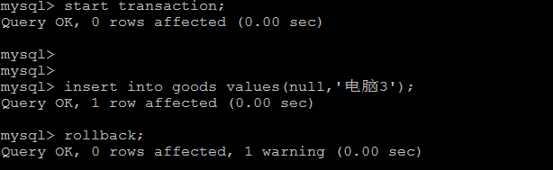
通过测试，我们发现，在MyISAM存储引擎中，是没有事务控制的 ；
文件存储方式
每个MyISAM在磁盘上存储成3个文件，其文件名都和表名相同，但拓展名分别是 ：
.frm (存储表定义)；
.MYD(MYData , 存储数据)；
.MYI(MYIndex , 存储索引)；
MEMORY
Memory存储引擎将表的数据存放在内存中。每个MEMORY表实际对应一个磁盘文件，格式是.frm ，该文件中只存储表的结构，而其数据文件，都是存储在内存中，这样有利于数据的快速处理，提高整个表的效率。MEMORY 类型的表访问非常地快，因为他的数据是存放在内存中的，并且默认使用HASH索引 ， 但是服务一旦关闭，表中的数据就会丢失。
MERGE
MERGE存储引擎是一组MyISAM表的组合，这些MyISAM表必须结构完全相同，MERGE表本身并没有存储数据，对MERGE类型的表可以进行查询、更新、删除操作，这些操作实际上是对内部的MyISAM表进行的。
对于MERGE类型表的插入操作，是通过INSERT_METHOD子句定义插入的表，可以有3个不同的值，使用FIRST 或 LAST 值使得插入操作被相应地作用在第一或者最后一个表上，不定义这个子句或者定义为NO，表示不能对这个MERGE表执行插入操作。
可以对MERGE表进行DROP操作，但是这个操作只是删除MERGE表的定义，对内部的表是没有任何影响的。
下面是一个创建和使用MERGE表的示例 ：
1）. 创建3个测试表 order_1990, order_1991, order_all , 其中order_all是前两个表的MERGE表 ：
1 | create table order_1990( |
2）. 分别向两张表中插入记录
1 | insert into order_1990 values(1,100.0,'北京'); |
3）. 查询3张表中的数据。
order_1990中的数据 ：

order_1991中的数据 ：

order_all中的数据 ：

4）. 往order_all中插入一条记录 ，由于在MERGE表定义时，INSERT_METHOD 选择的是LAST，那么插入的数据会想最后一张表中插入。
1 | insert into order_all values(100,10000.0,'西安')； |

存储引擎的选择
在选择存储引擎时，应该根据应用系统的特点选择合适的存储引擎。对于复杂的应用系统，还可以根据实际情况选择多种存储引擎进行组合。以下是几种常用的存储引擎的使用环境。
- InnoDB : 是Mysql的默认存储引擎，用于事务处理应用程序，支持外键。如果应用对事务的完整性有比较高的要求，在并发条件下要求数据的一致性，数据操作除了插入和查询意外，还包含很多的更新、删除操作，那么InnoDB存储引擎是比较合适的选择。InnoDB存储引擎除了有效的降低由于删除和更新导致的锁定， 还可以确保事务的完整提交和回滚，对于类似于计费系统或者财务系统等对数据准确性要求比较高的系统，InnoDB是最合适的选择。
- MyISAM ： 如果应用是以读操作和插入操作为主，只有很少的更新和删除操作，并且对事务的完整性、并发性要求不是很高，那么选择这个存储引擎是非常合适的。
- MEMORY：将所有数据保存在RAM中，在需要快速定位记录和其他类似数据环境下，可以提供几块的访问。MEMORY的缺陷就是对表的大小有限制，太大的表无法缓存在内存中，其次是要确保表的数据可以恢复，数据库异常终止后表中的数据是可以恢复的。MEMORY表通常用于更新不太频繁的小表，用以快速得到访问结果。
- MERGE：用于将一系列等同的MyISAM表以逻辑方式组合在一起，并作为一个对象引用他们。MERGE表的优点在于可以突破对单个MyISAM表的大小限制，并且通过将不同的表分布在多个磁盘上，可以有效的改善MERGE表的访问效率。这对于存储诸如数据仓储等VLDB环境十分合适。
优化SQL的步骤
在应用的的开发过程中，由于初期数据量小，开发人员写 SQL 语句时更重视功能上的实现，但是当应用系统正式上线后，随着生产数据量的急剧增长，很多 SQL 语句开始逐渐显露出性能问题，对生产的影响也越来越大，此时这些有问题的 SQL 语句就成为整个系统性能的瓶颈，因此我们必须要对它们进行优化，本章将详细介绍在 MySQL 中优化 SQL 语句的方法。
当面对一个有 SQL 性能问题的数据库时，我们应该从何处入手来进行系统的分析，使得能够尽快定位问题 SQL 并尽快解决问题。
查看SQL执行频率
MySQL 客户端连接成功后，通过 show [session|global] status 命令可以提供服务器状态信息。show [session|global] status 可以根据需要加上参数“session”或者“global”来显示 session 级（当前连接）的计结果和 global 级（自数据库上次启动至今）的统计结果。如果不写，默认使用参数是“session”。
下面的命令显示了当前 session 中所有统计参数的值：
1 | show status like 'Com_______'; |

1 | show status like 'Innodb_rows_%'; |

Com_xxx 表示每个 xxx 语句执行的次数，我们通常比较关心的是以下几个统计参数。
| 参数 | 含义 |
|---|---|
| Com_select | 执行 select 操作的次数，一次查询只累加 1。 |
| Com_insert | 执行 INSERT 操作的次数，对于批量插入的 INSERT 操作，只累加一次。 |
| Com_update | 执行 UPDATE 操作的次数。 |
| Com_delete | 执行 DELETE 操作的次数。 |
| Innodb_rows_read | select 查询返回的行数。 |
| Innodb_rows_inserted | 执行 INSERT 操作插入的行数。 |
| Innodb_rows_updated | 执行 UPDATE 操作更新的行数。 |
| Innodb_rows_deleted | 执行 DELETE 操作删除的行数。 |
| Connections | 试图连接 MySQL 服务器的次数。 |
| Uptime | 服务器工作时间。 |
| Slow_queries | 慢查询的次数。 |
- Com_*** : 这些参数对于所有存储引擎的表操作都会进行累计。
- Innodb_*** : 这几个参数只是针对InnoDB 存储引擎的，累加的算法也略有不同。
定位低效率执行SQL
可以通过以下两种方式定位执行效率较低的 SQL 语句。
- 慢查询日志 : 通过慢查询日志定位那些执行效率较低的 SQL 语句，用–log-slow-queries[=file_name]选项启动时，mysqld 写一个包含所有执行时间超过 long_query_time 秒的 SQL 语句的日志文件。具体可以查看本书第 26 章中日志管理的相关部分。
- show processlist : 慢查询日志在查询结束以后才纪录，所以在应用反映执行效率出现问题的时候查询慢查询日志并不能定位问题，可以使用show processlist命令查看当前MySQL在进行的线程，包括线程的状态、是否锁表等，可以实时地查看 SQL 的执行情况，同时对一些锁表操作进行优化。

1） id列，用户登录mysql时，系统分配的”connection_id”，可以使用函数connection_id()查看
2） user列，显示当前用户。如果不是root，这个命令就只显示用户权限范围的sql语句
3） host列，显示这个语句是从哪个ip的哪个端口上发的，可以用来跟踪出现问题语句的用户
4） db列，显示这个进程目前连接的是哪个数据库
5） command列，显示当前连接的执行的命令，一般取值为休眠（sleep），查询（query），连接（connect）等
6） time列，显示这个状态持续的时间，单位是秒
7） state列，显示使用当前连接的sql语句的状态，很重要的列。state描述的是语句执行中的某一个状态。一个sql语句，以查询为例，可能需要经过copying to tmp table、sorting result、sending data等状态才可以完成
8） info列，显示这个sql语句，是判断问题语句的一个重要依据
explain分析执行计划
通过以上步骤查询到效率低的 SQL 语句后，可以通过 EXPLAIN或者 DESC命令获取 MySQL如何执行 SELECT 语句的信息，包括在 SELECT 语句执行过程中表如何连接和连接的顺序。
查询SQL语句的执行计划 ：
1 | explain select * from tb_item where id = 1; |

1 | explain select * from tb_item where title = '阿尔卡特 (OT-979) 冰川白 联通3G手机3'; |

| 字段 | 含义 |
|---|---|
| id | select查询的序列号，是一组数字，表示的是查询中执行select子句或者是操作表的顺序。 |
| select_type | 表示 SELECT 的类型，常见的取值有 SIMPLE（简单表，即不使用表连接或者子查询）、PRIMARY（主查询，即外层的查询）、UNION（UNION 中的第二个或者后面的查询语句）、SUBQUERY（子查询中的第一个 SELECT）等 |
| table | 输出结果集的表 |
| type | 表示表的连接类型，性能由好到差的连接类型为( system —> const —–> eq_ref ——> ref ——-> ref_or_null—-> index_merge —> index_subquery —–> range —–> index ——> all ) |
| possible_keys | 表示查询时，可能使用的索引 |
| key | 表示实际使用的索引 |
| key_len | 索引字段的长度 |
| rows | 扫描行的数量 |
| extra | 执行情况的说明和描述 |
环境准备
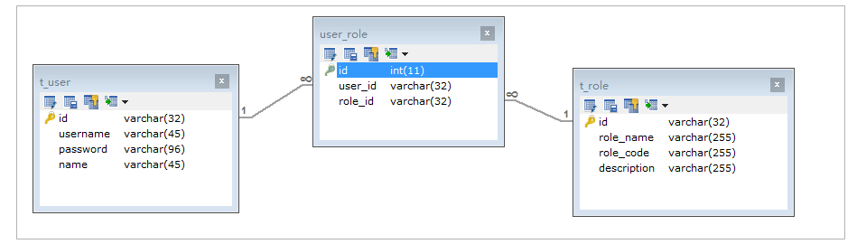
1 | CREATE TABLE `t_role` ( |
explain 之 id
id 字段是 select查询的序列号，是一组数字，表示的是查询中执行select子句或者是操作表的顺序。id 情况有三种 ：
1） id 相同表示加载表的顺序是从上到下。
1 | explain select * from t_role r, t_user u, user_role ur where r.id = ur.role_id and u.id = ur.user_id ; |

2） id 不同id值越大，优先级越高，越先被执行。
1 | EXPLAIN SELECT * FROM t_role WHERE id = (SELECT role_id FROM user_role WHERE user_id = (SELECT id FROM t_user WHERE username = 'stu1')) |
3） id 有相同，也有不同，同时存在。id相同的可以认为是一组，从上往下顺序执行；在所有的组中，id的值越大，优先级越高，越先执行。
1 | EXPLAIN SELECT * FROM t_role r , (SELECT * FROM user_role ur WHERE ur.`user_id` = '2') a WHERE r.id = a.role_id ; |

explain 之 select_type
表示 SELECT 的类型，常见的取值，如下表所示：
| type | 含义 |
|---|---|
| NULL | MySQL不访问任何表，索引，直接返回结果 |
| system | 表只有一行记录(等于系统表)，这是const类型的特例，一般不会出现 |
| const | 表示通过索引一次就找到了，const 用于比较primary key 或者 unique 索引。因为只匹配一行数据，所以很快。如将主键置于where列表中，MySQL 就能将该查询转换为一个常亮。const于将 “主键” 或 “唯一” 索引的所有部分与常量值进行比较 |
| eq_ref | 类似ref，区别在于使用的是唯一索引，使用主键的关联查询，关联查询出的记录只有一条。常见于主键或唯一索引扫描 |
| ref | 非唯一性索引扫描，返回匹配某个单独值的所有行。本质上也是一种索引访问，返回所有匹配某个单独值的所有行（多个） |
| range | 只检索给定返回的行，使用一个索引来选择行。 where 之后出现 between ， < , > , in 等操作。 |
| index | index 与 ALL的区别为 index 类型只是遍历了索引树， 通常比ALL 快， ALL 是遍历数据文件。 |
| all | 将遍历全表以找到匹配的行 |
结果值从最好到最坏以此是：
1 | NULL > system > const > eq_ref > ref > fulltext > ref_or_null > index_merge > unique_subquery > index_subquery > range > index > ALL |
一般来说， 我们需要保证查询至少达到 range 级别， 最好达到ref
explain 之 key
- possible_keys : 显示可能应用在这张表的索引， 一个或多个。
- key ： 实际使用的索引， 如果为NULL， 则没有使用索引。
- key_len : 表示索引中使用的字节数， 该值为索引字段最大可能长度，并非实际使用长度，在不损失精确性的前提下， 长度越短越好 。
explain 之 rows
扫描行的数量。
explain 之 extra
其他的额外的执行计划信息，在该列展示 。
| extra | 含义 |
|---|---|
| using filesort | 说明mysql会对数据使用一个外部的索引排序，而不是按照表内的索引顺序进行读取， 称为 “文件排序”, 效率低。 |
| using temporary | 使用了临时表保存中间结果，MySQL在对查询结果排序时使用临时表。常见于 order by 和 group by； 效率低 |
| using index | 表示相应的select操作使用了覆盖索引， 避免访问表的数据行， 效率不错。 |
show profile分析SQL
Mysql从5.0.37版本开始增加了对 show profiles 和 show profile 语句的支持。show profiles 能够在做SQL优化时帮助我们了解时间都耗费到哪里去了。
通过 have_profiling 参数，能够看到当前MySQL是否支持profile：

默认profiling是关闭的，可以通过set语句在Session级别开启profiling：
1 | set profiling=1; //开启profiling 开关； |
通过profile，我们能够更清楚地了解SQL执行的过程。
首先，我们可以执行一系列的操作，如下图所示：
1 | show databases; |
执行完上述命令之后，再执行show profiles 指令， 来查看SQL语句执行的耗时：

通过show profile for query query_id 语句可以查看到该SQL执行过程中每个线程的状态和消耗的时间：

1 | TIP ： |
在获取到最消耗时间的线程状态后，MySQL支持进一步选择all、cpu、block io 、context switch、page faults等明细类型类查看MySQL在使用什么资源上耗费了过高的时间。例如，选择查看CPU的耗费时间 ：

| 字段 | 含义 |
|---|---|
| Status | sql 语句执行的状态 |
| Duration | sql 执行过程中每一个步骤的耗时 |
| CPU_user | 当前用户占有的cpu |
| CPU_system | 系统占有的cpu |
trace分析优化器执行计划
MySQL5.6提供了对SQL的跟踪trace, 通过trace文件能够进一步了解为什么优化器选择A计划, 而不是选择B计划。
打开trace ， 设置格式为 JSON，并设置trace最大能够使用的内存大小，避免解析过程中因为默认内存过小而不能够完整展示。
1 | SET optimizer_trace="enabled=on",end_markers_in_json=on; |
执行SQL语句 ：
1 | select * from tb_item where id < 4; |
最后， 检查information_schema.optimizer_trace就可以知道MySQL是如何执行SQL的 ：
1 | select * from information_schema.optimizer_trace\G; |
1 | *************************** 1. row *************************** |
索引的使用
索引是数据库优化最常用也是最重要的手段之一, 通过索引通常可以帮助用户解决大多数的MySQL的性能优化问题。
验证索引提升查询效率
在我们准备的表结构tb_item 中， 一共存储了 300 万记录；
1). 根据ID查询
1 | select * from tb_item where id = 1999\G; |

查询速度很快， 接近0s ， 主要的原因是因为id为主键， 有索引；
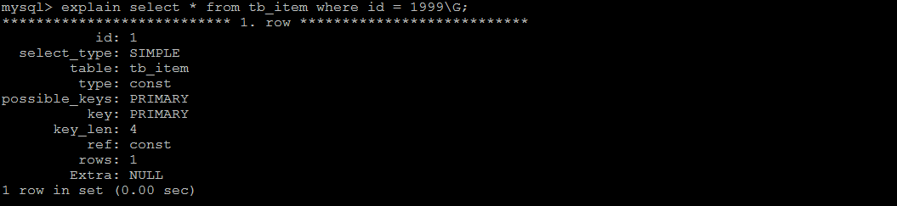
2). 根据 title 进行精确查询
1 | select * from tb_item where title = 'iphoneX 移动3G 32G941'\G; |

查看SQL语句的执行计划 ：

处理方案 ， 针对title字段， 创建索引 ：
1 | create index idx_item_title on tb_item(title); |
索引创建完成之后，再次进行查询 ：

通过explain ， 查看执行计划，执行SQL时使用了刚才创建的索引

索引的使用
准备环境
1 | create table `tb_seller` ( |
避免索引失效
1). 全值匹配 ，对索引中所有列都指定具体值。
此情况下，索引生效，执行效率高。
1 | explain select * from tb_seller where name='小米科技' and status='1' and address='北京市'\G; |

2). 最左前缀法则
如果索引了多列，要遵守最左前缀法则。指的是查询从索引的最左前列开始，并且不跳过索引中的列。
匹配最左前缀法则，走索引：

违法最左前缀法则 ， 索引失效：

如果符合最左法则，但是出现跳跃某一列，只有最左列索引生效：

3). 范围查询右边的列，不能使用索引 。

根据前面的两个字段name ， status 查询是走索引的， 但是最后一个条件address 没有用到索引。
4). 不要在索引列上进行运算操作， 索引将失效。

5). 字符串不加单引号，造成索引失效。

由于，在查询是，没有对字符串加单引号，MySQL的查询优化器，会自动的进行类型转换，造成索引失效。
6). 尽量使用覆盖索引，避免select *
尽量使用覆盖索引（只访问索引的查询（索引列完全包含查询列）），减少select * 。

如果查询列，超出索引列，也会降低性能。

1 | TIP : |
7). 用or分割开的条件， 如果or前的条件中的列有索引，而后面的列中没有索引，那么涉及的索引都不会被用到。
示例，name字段是索引列 ， 而createtime不是索引列，中间是or进行连接是不走索引的 ：
1 | explain select * from tb_seller where name='黑马程序员' or createtime = '2088-01-01 12:00:00'\G; |

8). 以%开头的Like模糊查询，索引失效。
如果仅仅是尾部模糊匹配，索引不会失效。如果是头部模糊匹配，索引失效。

解决方案 ：
通过覆盖索引来解决

9). 如果MySQL评估使用索引比全表更慢，则不使用索引。
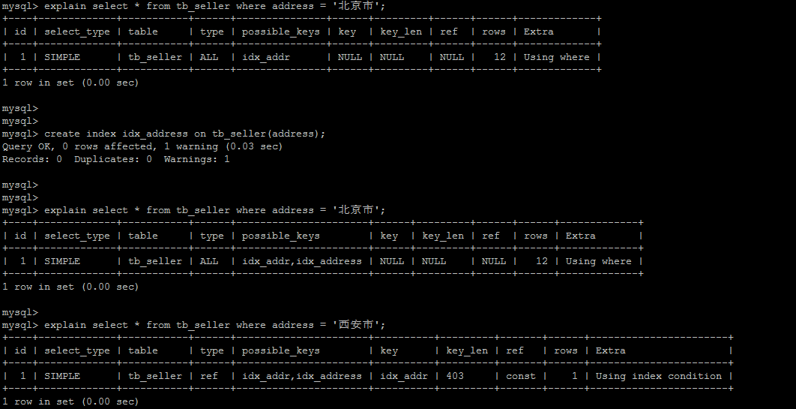
10). is NULL ， is NOT NULL 有时索引失效。

11). in 走索引， not in 索引失效。注：这条有争议

12). 单列索引和复合索引。
尽量使用复合索引，而少使用单列索引 。
创建复合索引
1 | create index idx_name_sta_address on tb_seller(name, status, address); |
创建单列索引
1 | create index idx_seller_name on tb_seller(name); |
数据库会选择一个最优的索引（辨识度最高索引）来使用，并不会使用全部索引 。
查看索引使用情况
1 | show status like 'Handler_read%'; |

1 | Handler_read_first：索引中第一条被读的次数。如果较高，表示服务器正执行大量全索引扫描（这个值越低越好）。 |
SQL优化
大批量插入数据
环境准备：
1 | CREATE TABLE `tb_user_2` ( |
当使用load 命令导入数据的时候，适当的设置可以提高导入的效率。

对于 InnoDB 类型的表，有以下几种方式可以提高导入的效率：
1） 主键顺序插入
因为InnoDB类型的表是按照主键的顺序保存的，所以将导入的数据按照主键的顺序排列，可以有效的提高导入数据的效率。如果InnoDB表没有主键，那么系统会自动默认创建一个内部列作为主键，所以如果可以给表创建一个主键，将可以利用这点，来提高导入数据的效率。
脚本文件介绍 :
sql1.log —-> 主键有序
sql2.log —-> 主键无序
插入ID顺序排列数据：
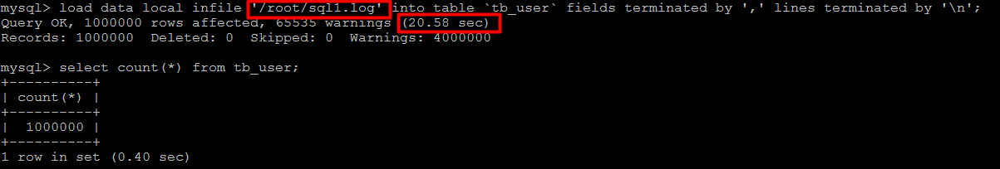
插入ID无序排列数据：

2） 关闭唯一性校验
在导入数据前执行 SET UNIQUE_CHECKS=0，关闭唯一性校验，在导入结束后执行SET UNIQUE_CHECKS=1，恢复唯一性校验，可以提高导入的效率。

3） 手动提交事务
如果应用使用自动提交的方式，建议在导入前执行 SET AUTOCOMMIT=0，关闭自动提交，导入结束后再执行 SET AUTOCOMMIT=1，打开自动提交，也可以提高导入的效率。
优化insert语句
当进行数据的insert操作的时候，可以考虑采用以下几种优化方案。
- 如果需要同时对一张表插入很多行数据时，应该尽量使用多个值表的insert语句，这种方式将大大的缩减客户端与数据库之间的连接、关闭等消耗。使得效率比分开执行的单个insert语句快。
示例， 原始方式为：
1 | insert into tb_test values(1,'Tom'); |
优化后的方案为 ：
1 | insert into tb_test values(1,'Tom'),(2,'Cat')，(3,'Jerry'); |
- 在事务中进行数据插入。
1 | start transaction; |
- 数据有序插入
1 | insert into tb_test values(4,'Tim'); |
优化后
1 | insert into tb_test values(1,'Tom'); |
优化order by语句
环境准备
1 | CREATE TABLE `emp` ( |
两种排序方式
1). 第一种是通过对返回数据进行排序，也就是通常说的 filesort 排序，所有不是通过索引直接返回排序结果的排序都叫 FileSort 排序。

2). 第二种通过有序索引顺序扫描直接返回有序数据，这种情况即为 using index，不需要额外排序，操作效率高。

多字段排序
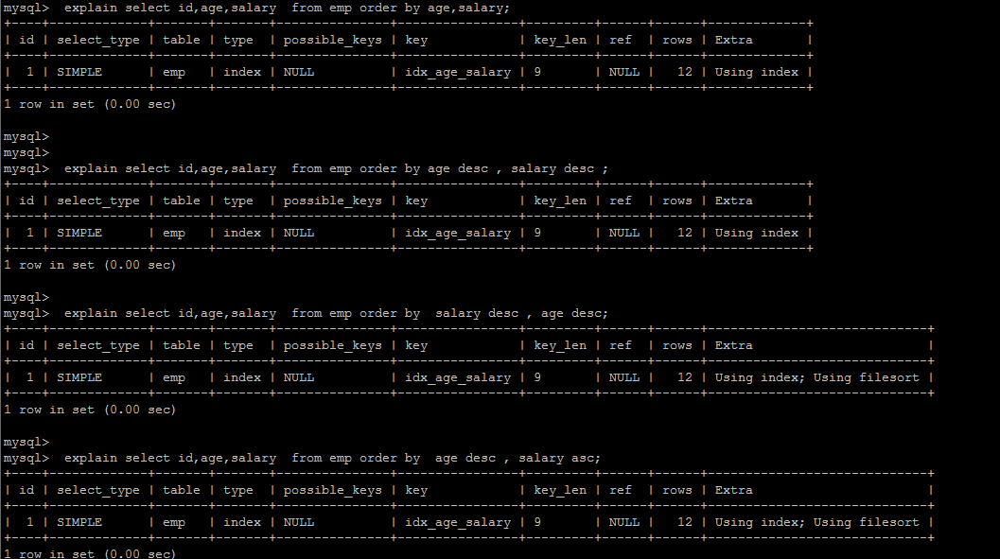
了解了MySQL的排序方式，优化目标就清晰了：尽量减少额外的排序，通过索引直接返回有序数据。where 条件和Order by 使用相同的索引，并且Order By 的顺序和索引顺序相同， 并且Order by 的字段都是升序，或者都是降序。否则肯定需要额外的操作，这样就会出现FileSort。
Filesort 的优化
通过创建合适的索引，能够减少 Filesort 的出现，但是在某些情况下，条件限制不能让Filesort消失，那就需要加快 Filesort的排序操作。对于Filesort ， MySQL 有两种排序算法：
1） 两次扫描算法 ：MySQL4.1 之前，使用该方式排序。首先根据条件取出排序字段和行指针信息，然后在排序区 sort buffer 中排序，如果sort buffer不够，则在临时表 temporary table 中存储排序结果。完成排序之后，再根据行指针回表读取记录，该操作可能会导致大量随机I/O操作。
2）一次扫描算法：一次性取出满足条件的所有字段，然后在排序区 sort buffer 中排序后直接输出结果集。排序时内存开销较大，但是排序效率比两次扫描算法要高。
MySQL 通过比较系统变量 max_length_for_sort_data 的大小和Query语句取出的字段总大小， 来判定是否那种排序算法，如果max_length_for_sort_data 更大，那么使用第二种优化之后的算法；否则使用第一种。
可以适当提高 sort_buffer_size 和 max_length_for_sort_data 系统变量，来增大排序区的大小，提高排序的效率。

优化group by 语句
由于GROUP BY 实际上也同样会进行排序操作，而且与ORDER BY 相比，GROUP BY 主要只是多了排序之后的分组操作。当然，如果在分组的时候还使用了其他的一些聚合函数，那么还需要一些聚合函数的计算。所以，在GROUP BY 的实现过程中，与 ORDER BY 一样也可以利用到索引。
如果查询包含 group by 但是用户想要避免排序结果的消耗， 则可以执行order by null 禁止排序。如下 ：
1 | drop index idx_emp_age_salary on emp; |

优化后
1 | explain select age,count(*) from emp group by age order by null; |
从上面的例子可以看出，第一个SQL语句需要进行”filesort”，而第二个SQL由于order by null 不需要进行 “filesort”， 而上文提过Filesort往往非常耗费时间。
创建索引 ：
1 | create index idx_emp_age_salary on emp(age,salary)； |

优化嵌套查询
Mysql4.1版本之后，开始支持SQL的子查询。这个技术可以使用SELECT语句来创建一个单列的查询结果，然后把这个结果作为过滤条件用在另一个查询中。使用子查询可以一次性的完成很多逻辑上需要多个步骤才能完成的SQL操作，同时也可以避免事务或者表锁死，并且写起来也很容易。但是，有些情况下，子查询是可以被更高效的连接（JOIN）替代。
示例 ，查找有角色的所有的用户信息 :
1 | explain select * from t_user where id in (select user_id from user_role ); |
执行计划为 :

优化后 :
1 | explain select * from t_user u , user_role ur where u.id = ur.user_id; |

连接(Join)查询之所以更有效率一些 ，是因为MySQL不需要在内存中创建临时表来完成这个逻辑上需要两个步骤的查询工作。
优化OR条件
对于包含OR的查询子句，如果要利用索引，则OR之间的每个条件列都必须用到索引 ， 而且不能使用到复合索引； 如果没有索引，则应该考虑增加索引。
获取 emp 表中的所有的索引 ：

示例 ：
1 | explain select * from emp where id = 1 or age = 30; |
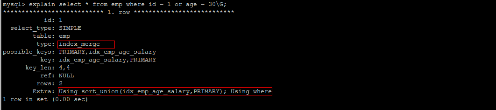

建议使用 union 替换 or ：

我们来比较下重要指标，发现主要差别是 type 和 ref 这两项
type 显示的是访问类型，是较为重要的一个指标，结果值从好到坏依次是：
system > const > eq_ref > ref > fulltext > ref_or_null > index_merge > unique_subquery > index_subquery > range > index > ALL
UNION 语句的 type 值为 ref，OR 语句的 type 值为 range，可以看到这是一个很明显的差距
UNION 语句的 ref 值为 const，OR 语句的 type 值为 null，const 表示是常量值引用，非常快
这两项的差距就说明了 UNION 要优于 OR 。
优化分页查询
一般分页查询时，通过创建覆盖索引能够比较好地提高性能。一个常见又非常头疼的问题就是 limit 2000000,10 ，此时需要MySQL排序前2000010 记录，仅仅返回2000000 - 2000010 的记录，其他记录丢弃，查询排序的代价非常大 。

优化思路一
在索引上完成排序分页操作，最后根据主键关联回原表查询所需要的其他列内容。

优化思路二
该方案适用于主键自增的表，可以把Limit 查询转换成某个位置的查询 。

使用SQL提示
SQL提示，是优化数据库的一个重要手段，简单来说，就是在SQL语句中加入一些人为的提示来达到优化操作的目的。
USE INDEX
在查询语句中表名的后面，添加 use index 来提供希望MySQL去参考的索引列表，就可以让MySQL不再考虑其他可用的索引。
1 | create index idx_seller_name on tb_seller(name); |

IGNORE INDEX
如果用户只是单纯的想让MySQL忽略一个或者多个索引，则可以使用 ignore index 作为 hint 。
1 | explain select * from tb_seller ignore index(idx_seller_name) where name = '小米科技'; |

FORCE INDEX
为强制MySQL使用一个特定的索引，可在查询中使用 force index 作为hint 。
1 | create index idx_seller_address on tb_seller(address); |

应用优化
前面章节，我们介绍了很多数据库的优化措施。但是在实际生产环境中，由于数据库本身的性能局限，就必须要对前台的应用进行一些优化，来降低数据库的访问压力。
使用连接池
对于访问数据库来说，建立连接的代价是比较昂贵的，因为我们频繁的创建关闭连接，是比较耗费资源的，我们有必要建立 数据库连接池，以提高访问的性能。
减少对MySQL的访问
避免对数据进行重复检索
在编写应用代码时，需要能够理清对数据库的访问逻辑。能够一次连接就获取到结果的，就不用两次连接，这样可以大大减少对数据库无用的重复请求。
比如 ，需要获取书籍的id 和name字段 ， 则查询如下：
1 | select id , name from tb_book; |
之后，在业务逻辑中有需要获取到书籍状态信息， 则查询如下：
1 | select id , status from tb_book; |
这样，就需要向数据库提交两次请求，数据库就要做两次查询操作。其实完全可以用一条SQL语句得到想要的结果。
1 | select id, name , status from tb_book; |
增加cache层
在应用中，我们可以在应用中增加 缓存 层来达到减轻数据库负担的目的。缓存层有很多种，也有很多实现方式，只要能达到降低数据库的负担又能满足应用需求就可以。
因此可以部分数据从数据库中抽取出来放到应用端以文本方式存储， 或者使用框架(Mybatis, Hibernate)提供的一级缓存/二级缓存，或者使用redis数据库来缓存数据 。
负载均衡
负载均衡是应用中使用非常普遍的一种优化方法，它的机制就是利用某种均衡算法，将固定的负载量分布到不同的服务器上， 以此来降低单台服务器的负载，达到优化的效果。
利用MySQL复制分流查询
通过MySQL的主从复制，实现读写分离，使增删改操作走主节点，查询操作走从节点，从而可以降低单台服务器的读写压力。
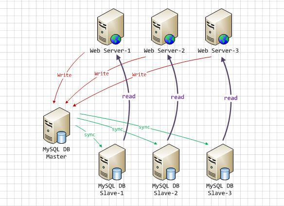
采用分布式数据库架构
分布式数据库架构适合大数据量、负载高的情况，它有良好的拓展性和高可用性。通过在多台服务器之间分布数据，可以实现在多台服务器之间的负载均衡，提高访问效率。
Mysql中查询缓存优化
概述
开启Mysql的查询缓存，当执行完全相同的SQL语句的时候，服务器就会直接从缓存中读取结果，当数据被修改，之前的缓存会失效，修改比较频繁的表不适合做查询缓存。
操作流程

- 客户端发送一条查询给服务器；
- 服务器先会检查查询缓存，如果命中了缓存，则立即返回存储在缓存中的结果。否则进入下一阶段；
- 服务器端进行SQL解析、预处理，再由优化器生成对应的执行计划；
- MySQL根据优化器生成的执行计划，调用存储引擎的API来执行查询；
- 将结果返回给客户端。
查询缓存配置
- 查看当前的MySQL数据库是否支持查询缓存：
1 | SHOW VARIABLES LIKE 'have_query_cache'; |

- Mysql8，已经取消了查询缓存 ：如图所示
- 查看当前MySQL是否开启了查询缓存 ：
1 | SHOW VARIABLES LIKE 'query_cache_type'; |

- 查看查询缓存的占用大小 ：
1 | SHOW VARIABLES LIKE 'query_cache_size'; |

- 查看查询缓存的状态变量：
1 | SHOW STATUS LIKE 'Qcache%'; |
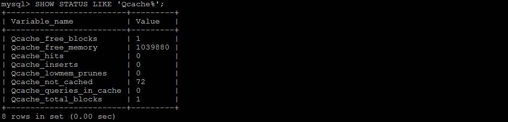
各个变量的含义如下：
| 参数 | 含义 |
|---|---|
| Qcache_free_blocks | 查询缓存中的可用内存块数 |
| Qcache_free_memory | 查询缓存的可用内存量 |
| Qcache_hits | 查询缓存命中数 |
| Qcache_inserts | 添加到查询缓存的查询数 |
| Qcache_lowmen_prunes | 由于内存不足而从查询缓存中删除的查询数 |
| Qcache_not_cached | 非缓存查询的数量（由于 query_cache_type 设置而无法缓存或未缓存） |
| Qcache_queries_in_cache | 查询缓存中注册的查询数 |
| Qcache_total_blocks | 查询缓存中的块总数 |
开启查询缓存
MySQL的查询缓存默认是关闭的，需要手动配置参数 query_cache_type ， 来开启查询缓存。query_cache_type 该参数的可取值有三个 ：
| 值 | 含义 |
|---|---|
| OFF 或 0 | 查询缓存功能关闭 |
| ON 或 1 | 查询缓存功能打开，SELECT的结果符合缓存条件即会缓存，否则，不予缓存，显式指定 SQL_NO_CACHE，不予缓存 |
| DEMAND 或 2 | 查询缓存功能按需进行，显式指定 SQL_CACHE 的SELECT语句才会缓存；其它均不予缓存 |
在 /usr/my.cnf 配置中，增加以下配置 ：

配置完毕之后，重启服务既可生效 ；
然后就可以在命令行执行SQL语句进行验证 ，执行一条比较耗时的SQL语句，然后再多执行几次，查看后面几次的执行时间；获取通过查看查询缓存的缓存命中数，来判定是否走查询缓存。
查询缓存SELECT选项
可以在SELECT语句中指定两个与查询缓存相关的选项 ：
SQL_CACHE : 如果查询结果是可缓存的，并且 query_cache_type 系统变量的值为ON或 DEMAND ，则缓存查询结果 。
SQL_NO_CACHE : 服务器不使用查询缓存。它既不检查查询缓存，也不检查结果是否已缓存，也不缓存查询结果。
例子：
1 | SELECT SQL_CACHE id, name FROM customer; |
查询缓存失效的情况
1） SQL 语句不一致的情况， 要想命中查询缓存，查询的SQL语句必须一致。
1 | SQL1 : select count(*) from tb_item; |
2） 当查询语句中有一些不确定的时，则不会缓存。如 ： now() , current_date() , curdate() , curtime() , rand() , uuid() , user() , database() 。
1 | SQL1 : select * from tb_item where updatetime < now() limit 1; |
3） 不使用任何表查询语句。
1 | select 'A'; |
4） 查询 mysql， information_schema或 performance_schema 数据库中的表时，不会走查询缓存。
1 | select * from information_schema.engines; |
5） 在存储的函数，触发器或事件的主体内执行的查询。
6） 如果表更改，则使用该表的所有高速缓存查询都将变为无效并从高速缓存中删除。这包括使用MERGE映射到已更改表的表的查询。一个表可以被许多类型的语句，如被改变 INSERT， UPDATE， DELETE， TRUNCATE TABLE， ALTER TABLE， DROP TABLE，或 DROP DATABASE 。
Mysql内存管理及优化
内存优化原则
1） 将尽量多的内存分配给MySQL做缓存，但要给操作系统和其他程序预留足够内存。
2） MyISAM 存储引擎的数据文件读取依赖于操作系统自身的IO缓存，因此，如果有MyISAM表，就要预留更多的内存给操作系统做IO缓存。
3） 排序区、连接区等缓存是分配给每个数据库会话（session）专用的，其默认值的设置要根据最大连接数合理分配，如果设置太大，不但浪费资源，而且在并发连接较高时会导致物理内存耗尽。
MyISAM 内存优化
myisam存储引擎使用 key_buffer 缓存索引块，加速myisam索引的读写速度。对于myisam表的数据块，mysql没有特别的缓存机制，完全依赖于操作系统的IO缓存。
- key_buffer_size
key_buffer_size决定MyISAM索引块缓存区的大小，直接影响到MyISAM表的存取效率。可以在MySQL参数文件中设置key_buffer_size的值，对于一般MyISAM数据库，建议至少将1/4可用内存分配给key_buffer_size。
在/usr/my.cnf 中做如下配置：
1 | key_buffer_size=512M |
- read_buffer_size
如果需要经常顺序扫描myisam表，可以通过增大read_buffer_size的值来改善性能。但需要注意的是read_buffer_size是每个session独占的，如果默认值设置太大，就会造成内存浪费。
- read_rnd_buffer_size
对于需要做排序的myisam表的查询，如带有order by子句的sql，适当增加 read_rnd_buffer_size 的值，可以改善此类的sql性能。但需要注意的是 read_rnd_buffer_size 是每个session独占的，如果默认值设置太大，就会造成内存浪费。
InnoDB 内存优化
innodb用一块内存区做IO缓存池，该缓存池不仅用来缓存innodb的索引块，而且也用来缓存innodb的数据块。
- innodb_buffer_pool_size
该变量决定了 innodb 存储引擎表数据和索引数据的最大缓存区大小。在保证操作系统及其他程序有足够内存可用的情况下，innodb_buffer_pool_size 的值越大，缓存命中率越高，访问InnoDB表需要的磁盘I/O 就越少，性能也就越高。
1 | innodb_buffer_pool_size=512M |
- innodb_log_buffer_size
决定了innodb重做日志缓存的大小，对于可能产生大量更新记录的大事务，增加innodb_log_buffer_size的大小，可以避免innodb在事务提交前就执行不必要的日志写入磁盘操作。
1 | innodb_log_buffer_size=10M |
Mysql并发参数调整
从实现上来说，MySQL Server 是多线程结构，包括后台线程和客户服务线程。多线程可以有效利用服务器资源，提高数据库的并发性能。在Mysql中，控制并发连接和线程的主要参数包括 max_connections、back_log、thread_cache_size、table_open_cahce。
max_connections
采用max_connections 控制允许连接到MySQL数据库的最大数量，默认值是 151。如果状态变量 connection_errors_max_connections 不为零，并且一直增长，则说明不断有连接请求因数据库连接数已达到允许最大值而失败，这是可以考虑增大max_connections 的值。
Mysql 最大可支持的连接数，取决于很多因素，包括给定操作系统平台的线程库的质量、内存大小、每个连接的负荷、CPU的处理速度，期望的响应时间等。在Linux 平台下，性能好的服务器，支持 500-1000 个连接不是难事，需要根据服务器性能进行评估设定。
back_log
back_log 参数控制MySQL监听TCP端口时设置的积压请求栈大小。如果MySql的连接数达到max_connections时，新来的请求将会被存在堆栈中，以等待某一连接释放资源，该堆栈的数量即back_log，如果等待连接的数量超过back_log，将不被授予连接资源，将会报错。5.6.6 版本之前默认值为 50 ， 之后的版本默认为 50 + （max_connections / 5）， 但最大不超过900。
如果需要数据库在较短的时间内处理大量连接请求， 可以考虑适当增大back_log 的值。
table_open_cache
该参数用来控制所有SQL语句执行线程可打开表缓存的数量， 而在执行SQL语句时，每一个SQL执行线程至少要打开 1 个表缓存。该参数的值应该根据设置的最大连接数 max_connections 以及每个连接执行关联查询中涉及的表的最大数量来设定 ：
max_connections x N ；
thread_cache_size
为了加快连接数据库的速度，MySQL 会缓存一定数量的客户服务线程以备重用，通过参数 thread_cache_size 可控制 MySQL 缓存客户服务线程的数量。
innodb_lock_wait_timeout
该参数是用来设置InnoDB 事务等待行锁的时间，默认值是50ms ， 可以根据需要进行动态设置。对于需要快速反馈的业务系统来说，可以将行锁的等待时间调小，以避免事务长时间挂起； 对于后台运行的批量处理程序来说， 可以将行锁的等待时间调大， 以避免发生大的回滚操作。
Mysql锁问题
锁概述
锁是计算机协调多个进程或线程并发访问某一资源的机制（避免争抢）。
在数据库中，除传统的计算资源（如 CPU、RAM、I/O 等）的争用以外，数据也是一种供许多用户共享的资源。如何保证数据并发访问的一致性、有效性是所有数据库必须解决的一个问题，锁冲突也是影响数据库并发访问性能的一个重要因素。从这个角度来说，锁对数据库而言显得尤其重要，也更加复杂。
锁分类
从对数据操作的粒度分 ：
1） 表锁：操作时，会锁定整个表。
2） 行锁：操作时，会锁定当前操作行。
从对数据操作的类型分：
1） 读锁（共享锁）：针对同一份数据，多个读操作可以同时进行而不会互相影响。
2） 写锁（排它锁）：当前操作没有完成之前，它会阻断其他写锁和读锁。
Mysql 锁
相对其他数据库而言，MySQL的锁机制比较简单，其最显著的特点是不同的存储引擎支持不同的锁机制。下表中罗列出了各存储引擎对锁的支持情况：
| 存储引擎 | 表级锁 | 行级锁 | 页面锁 |
|---|---|---|---|
| MyISAM | 支持 | 不支持 | 不支持 |
| InnoDB | 支持 | 支持 | 不支持 |
| MEMORY | 支持 | 不支持 | 不支持 |
| BDB | 支持 | 不支持 | 支持 |
MySQL这3种锁的特性可大致归纳如下 ：
| 锁类型 | 特点 |
|---|---|
| 表级锁 | 偏向MyISAM 存储引擎，开销小，加锁快；不会出现死锁；锁定粒度大，发生锁冲突的概率最高,并发度最低。 |
| 行级锁 | 偏向InnoDB 存储引擎，开销大，加锁慢；会出现死锁；锁定粒度最小，发生锁冲突的概率最低,并发度也最高。 |
| 页面锁 | 开销和加锁时间界于表锁和行锁之间；会出现死锁；锁定粒度界于表锁和行锁之间，并发度一般。 |
从上述特点可见，很难笼统地说哪种锁更好，只能就具体应用的特点来说哪种锁更合适！仅从锁的角度来说：表级锁更适合于以查询为主，只有少量按索引条件更新数据的应用，如Web 应用；而行级锁则更适合于有大量按索引条件并发更新少量不同数据，同时又有并查询的应用，如一些在线事务处理（OLTP）系统。
MyISAM 表锁
MyISAM 存储引擎只支持表锁，这也是MySQL开始几个版本中唯一支持的锁类型。
如何加表锁
MyISAM 在执行查询语句（SELECT）前，会自动给涉及的所有表加读锁，在执行更新操作（UPDATE、DELETE、INSERT 等）前，会自动给涉及的表加写锁，这个过程并不需要用户干预，因此，用户一般不需要直接用 LOCK TABLE 命令给 MyISAM 表显式加锁。
显示加表锁语法：
1 | 加读锁 ： lock table table_name read; |
读锁案例
准备环境
1 | create database demo_03 default charset=utf8mb4; |
客户端 一 ：
1）获得tb_book 表的读锁
1 | lock table tb_book read; |
2） 执行查询操作
1 | select * from tb_book; |

可以正常执行 ， 查询出数据。
客户端 二 ：
3） 执行查询操作
1 | select * from tb_book; |

客户端 一 ：
4）查询未锁定的表
1 | select name from tb_seller; |

客户端 二 ：
5）查询未锁定的表
1 | select name from tb_seller; |

可以正常查询出未锁定的表；
客户端 一 ：
6） 执行插入操作
1 | insert into tb_book values(null,'Mysql高级','2088-01-01','1'); |

执行插入， 直接报错 ， 由于当前tb_book 获得的是 读锁， 不能执行更新操作。
客户端 二 ：
7） 执行插入操作
1 | insert into tb_book values(null,'Mysql高级','2088-01-01','1'); |

当在客户端一中释放锁指令 unlock tables 后 ， 客户端二中的 inesrt 语句 ， 立即执行；
写锁案例
客户端 一 :
1）获得tb_book 表的写锁
1 | lock table tb_book write ; |
2）执行查询操作
1 | select * from tb_book ; |

查询操作执行成功；
3）执行更新操作
1 | update tb_book set name = 'java编程思想（第二版）' where id = 1; |

更新操作执行成功 ；
客户端 二 :
4）执行查询操作
select * from tb_book ;

当在客户端一中释放锁指令 unlock tables 后 ， 客户端二中的 select 语句 ， 立即执行 ；

结论
锁模式的相互兼容性如表中所示：

由上表可见：
1） 对MyISAM 表的读操作，不会阻塞其他用户对同一表的读请求，但会阻塞对同一表的写请求；
2） 对MyISAM 表的写操作，则会阻塞其他用户对同一表的读和写操作；
简而言之，就是读锁会阻塞写，但是不会阻塞读。而写锁，则既会阻塞读，又会阻塞写。
此外，MyISAM 的读写锁调度是写优先，这也是MyISAM不适合做写为主的表的存储引擎的原因。因为写锁后，其他线程不能做任何操作，大量的更新会使查询很难得到锁，从而造成永远阻塞。
查看锁的争用情况
1 | show open tables； |
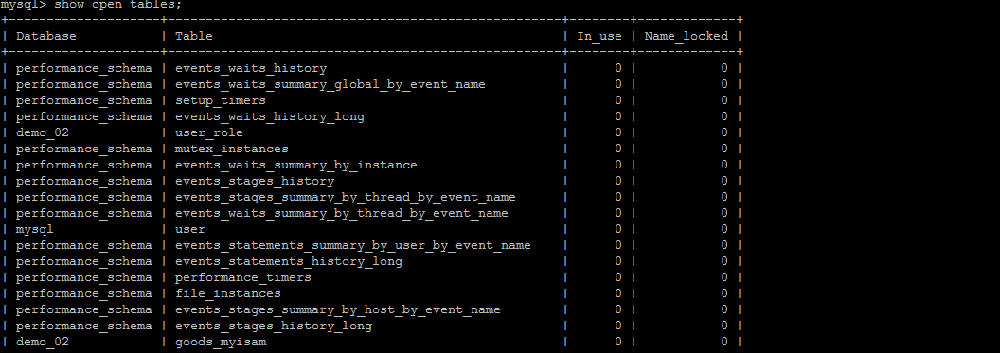
In_user : 表当前被查询使用的次数。如果该数为零，则表是打开的，但是当前没有被使用。
Name_locked：表名称是否被锁定。名称锁定用于取消表或对表进行重命名等操作。
1 | show status like 'Table_locks%'; |

Table_locks_immediate ： 指的是能够立即获得表级锁的次数，每立即获取锁，值加1。
Table_locks_waited ： 指的是不能立即获取表级锁而需要等待的次数，每等待一次，该值加1，此值高说明存在着较为严重的表级锁争用情况。
InnoDB行锁
行锁介绍
行锁特点 ：偏向InnoDB 存储引擎，开销大，加锁慢；会出现死锁；锁定粒度最小，发生锁冲突的概率最低,并发度也最高。
InnoDB 与 MyISAM 的最大不同有两点：一是支持事务；二是 采用了行级锁。
背景知识
事务及其ACID属性
事务是由一组SQL语句组成的逻辑处理单元。
事务具有以下4个特性，简称为事务ACID属性。
| ACID属性 | 含义 |
|---|---|
| 原子性（Atomicity） | 事务是一个原子操作单元，其对数据的修改，要么全部成功，要么全部失败。 |
| 一致性（Consistent） | 在事务开始和完成时，数据都必须保持一致状态。 |
| 隔离性（Isolation） | 数据库系统提供一定的隔离机制，保证事务在不受外部并发操作影响的 “独立” 环境下运行。 |
| 持久性（Durable） | 事务完成之后，对于数据的修改是永久的。 |
并发事务处理带来的问题
| 问题 | 含义 |
|---|---|
| 丢失更新（Lost Update） | 当两个或多个事务选择同一行，最初的事务修改的值，会被后面的事务修改的值覆盖。 |
| 脏读（Dirty Reads） | 当一个事务正在访问数据，并且对数据进行了修改，而这种修改还没有提交到数据库中，这时，另外一个事务也访问这个数据，然后使用了这个数据。 |
| 不可重复读（Non-Repeatable Reads） | 一个事务在读取某些数据后的某个时间，再次读取以前读过的数据，却发现和以前读出的数据不一致。 |
| 幻读（Phantom Reads） | 一个事务按照相同的查询条件重新读取以前查询过的数据，却发现其他事务插入了满足其查询条件的新数据。 |
事务隔离级别
为了解决上述提到的事务并发问题，数据库提供一定的事务隔离机制来解决这个问题。数据库的事务隔离越严格，并发副作用越小，但付出的代价也就越大，因为事务隔离实质上就是使用事务在一定程度上“串行化” 进行，这显然与“并发” 是矛盾的。
数据库的隔离级别有4个，由低到高依次为Read uncommitted、Read committed、Repeatable read、Serializable，这四个级别可以逐个解决脏写、脏读、不可重复读、幻读这几类问题。
| 隔离级别 | 丢失更新 | 脏读 | 不可重复读 | 幻读 |
|---|---|---|---|---|
| Read uncommitted | × | √ | √ | √ |
| Read committed | × | × | √ | √ |
| Repeatable read（默认） | × | × | × | √ |
| Serializable | × | × | × | × |
备注 ： √ 代表可能出现 ， × 代表不会出现 。
Mysql 的数据库的默认隔离级别为 Repeatable read ， 查看方式：
show variables like ‘tx_isolation’;

InnoDB 的行锁模式
InnoDB 实现了以下两种类型的行锁。
- 共享锁（S）：又称为读锁，简称S锁，共享锁就是多个事务对于同一数据可以共享一把锁，都能访问到数据，但是只能读不能修改。
- 排他锁（X）：又称为写锁，简称X锁，排他锁就是不能与其他锁并存，如一个事务获取了一个数据行的排他锁，其他事务就不能再获取该行的其他锁，包括共享锁和排他锁，但是获取排他锁的事务是可以对数据就行读取和修改。
对于UPDATE、DELETE和INSERT语句，InnoDB会自动给涉及数据集加排他锁（X)；
对于普通SELECT语句，InnoDB不会加任何锁；
可以通过以下语句显示给记录集加共享锁或排他锁 。
1 | 共享锁（S）：SELECT * FROM table_name WHERE ... LOCK IN SHARE MODE |
行锁基本演示
| Session-1 | Session-2 |
|---|---|
 关闭自动提交功能 关闭自动提交功能 |
 关闭自动提交功能 关闭自动提交功能 |
 可以正常的查询出全部的数据 可以正常的查询出全部的数据 |
 可以正常的查询出全部的数据 可以正常的查询出全部的数据 |
 查询id 为3的数据 ； 查询id 为3的数据 ； |
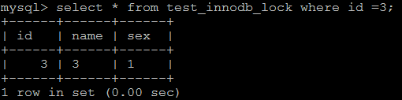获取id为3的数据 ； |
 更新id为3的数据，但是不提交； 更新id为3的数据，但是不提交； |
 更新id为3 的数据， 出于等待状态 更新id为3 的数据， 出于等待状态 |
 通过commit， 提交事务 通过commit， 提交事务 |
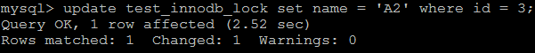 解除阻塞，更新正常进行 |
| 以上， 操作的都是同一行的数据，接下来，演示不同行的数据 ： | |
 更新id为3数据，正常的获取到行锁 ， 执行更新 ； 更新id为3数据，正常的获取到行锁 ， 执行更新 ； |
 由于与Session-1 操作不是同一行，获取当前行锁，执行更新； 由于与Session-1 操作不是同一行，获取当前行锁，执行更新； |
无索引行锁升级为表锁
如果不通过索引条件检索数据，那么InnoDB将对表中的所有记录加锁，实际效果跟表锁一样。
查看当前表的索引 ： show index from test_innodb_lock ;

| Session-1 | Session-2 |
|---|---|
关闭事务的自动提交 |
关闭事务的自动提交 |
执行更新语句 ： |
执行更新语句， 但处于阻塞状态： |
提交事务： |
解除阻塞，执行更新成功 ： |
执行提交操作 ： |
由于 执行更新时 ， name字段本来为varchar类型， 我们是作为数组类型使用，存在类型转换，索引失效，最终行锁变为表锁 ；
间隙锁危害
当我们用范围条件，而不是使用相等条件检索数据，并请求共享或排他锁时，InnoDB会给符合条件的已有数据进行加锁； 对于键值在条件范围内但并不存在的记录，叫做 “间隙（GAP）” ， InnoDB也会对这个 “间隙” 加锁，这种锁机制就是所谓的 间隙锁（Next-Key锁） 。
示例 ：
| Session-1 | Session-2 |
|---|---|
关闭事务自动提交  |
关闭事务自动提交 |
根据id范围更新数据 |
|
插入id为2的记录， 出于阻塞状态 |
|
提交事务 ； |
|
解除阻塞 ， 执行插入操作 ： |
|
| 提交事务 ： |
InnoDB 行锁争用情况
1 | show status like 'innodb_row_lock%'; |

1 | Innodb_row_lock_current_waits: 当前正在等待锁定的数量 |
总结
InnoDB存储引擎由于实现了行级锁定，虽然在锁定机制的实现方面带来了性能损耗可能比表锁会更高一些，但是在整体并发处理能力方面要远远由于MyISAM的表锁的。当系统并发量较高的时候，InnoDB的整体性能和MyISAM相比就会有比较明显的优势。
但是，InnoDB的行级锁同样也有其脆弱的一面，当我们使用不当的时候，可能会让InnoDB的整体性能表现不仅不能比MyISAM高，甚至可能会更差。
优化建议：
- 尽可能让所有数据检索都能通过索引来完成，避免无索引行锁升级为表锁。
- 合理设计索引，尽量缩小锁的范围
- 尽可能减少索引条件，及索引范围，避免间隙锁
- 尽量控制事务大小，减少锁定资源量和时间长度
- 尽可使用低级别事务隔离（但是需要业务层面满足需求）
常用SQL技巧
SQL执行顺序
编写顺序
1 | SELECT DISTINCT |
执行顺序
1 | FROM <left_table> |
正则表达式使用
正则表达式（Regular Expression）是指一个用来描述或者匹配一系列符合某个句法规则的字符串的单个字符串。
| 符号 | 含义 |
|---|---|
| ^ | 在字符串开始处进行匹配 |
| $ | 在字符串末尾处进行匹配 |
| . | 匹配任意单个字符, 包括换行符 |
| […] | 匹配出括号内的任意字符 |
| [^…] | 匹配不出括号内的任意字符 |
| a* | 匹配零个或者多个a(包括空串) |
| a+ | 匹配一个或者多个a(不包括空串) |
| a? | 匹配零个或者一个a |
| a1|a2 | 匹配a1或a2 |
| a(m) | 匹配m个a |
| a(m,) | 至少匹配m个a |
| a(m,n) | 匹配m个a 到 n个a |
| a(,n) | 匹配0到n个a |
| (…) | 将模式元素组成单一元素 |
1 | select * from emp where name regexp '^T'; |
MySQL 常用函数
数字函数
| 函数名称 | 作 用 |
|---|---|
| ABS | 求绝对值 |
| SQRT | 求二次方根 |
| MOD | 求余数 |
| CEIL 和 CEILING | 两个函数功能相同，都是返回不小于参数的最小整数，即向上取整 |
| FLOOR | 向下取整，返回值转化为一个BIGINT |
| RAND | 生成一个0~1之间的随机数，传入整数参数是，用来产生重复序列 |
| ROUND | 对所传参数进行四舍五入 |
| SIGN | 返回参数的符号 |
| POW 和 POWER | 两个函数的功能相同，都是所传参数的次方的结果值 |
| SIN | 求正弦值 |
| ASIN | 求反正弦值，与函数 SIN 互为反函数 |
| COS | 求余弦值 |
| ACOS | 求反余弦值，与函数 COS 互为反函数 |
| TAN | 求正切值 |
| ATAN | 求反正切值，与函数 TAN 互为反函数 |
| COT | 求余切值 |
字符串函数
| 函数名称 | 作 用 |
|---|---|
| LENGTH | 计算字符串长度函数，返回字符串的字节长度 |
| CONCAT | 合并字符串函数，返回结果为连接参数产生的字符串，参数可以使一个或多个 |
| INSERT | 替换字符串函数 |
| LOWER | 将字符串中的字母转换为小写 |
| UPPER | 将字符串中的字母转换为大写 |
| LEFT | 从左侧字截取符串，返回字符串左边的若干个字符 |
| RIGHT | 从右侧字截取符串，返回字符串右边的若干个字符 |
| TRIM | 删除字符串左右两侧的空格 |
| REPLACE | 字符串替换函数，返回替换后的新字符串 |
| SUBSTRING | 截取字符串，返回从指定位置开始的指定长度的字符换 |
| REVERSE | 字符串反转（逆序）函数，返回与原始字符串顺序相反的字符串 |
日期函数
| 函数名称 | 作 用 |
|---|---|
| CURDATE 和 CURRENT_DATE | 两个函数作用相同，返回当前系统的日期值 |
| CURTIME 和 CURRENT_TIME | 两个函数作用相同，返回当前系统的时间值 |
| NOW 和 SYSDATE | 两个函数作用相同，返回当前系统的日期和时间值 |
| MONTH | 获取指定日期中的月份 |
| MONTHNAME | 获取指定日期中的月份英文名称 |
| DAYNAME | 获取指定曰期对应的星期几的英文名称 |
| DAYOFWEEK | 获取指定日期对应的一周的索引位置值 |
| WEEK | 获取指定日期是一年中的第几周，返回值的范围是否为 0〜52 或 1〜53 |
| DAYOFYEAR | 获取指定曰期是一年中的第几天，返回值范围是1~366 |
| DAYOFMONTH | 获取指定日期是一个月中是第几天，返回值范围是1~31 |
| YEAR | 获取年份，返回值范围是 1970〜2069 |
| TIME_TO_SEC | 将时间参数转换为秒数 |
| SEC_TO_TIME | 将秒数转换为时间，与TIME_TO_SEC 互为反函数 |
| DATE_ADD 和 ADDDATE | 两个函数功能相同，都是向日期添加指定的时间间隔 |
| DATE_SUB 和 SUBDATE | 两个函数功能相同，都是向日期减去指定的时间间隔 |
| ADDTIME | 时间加法运算，在原始时间上添加指定的时间 |
| SUBTIME | 时间减法运算，在原始时间上减去指定的时间 |
| DATEDIFF | 获取两个日期之间间隔，返回参数 1 减去参数 2 的值 |
| DATE_FORMAT | 格式化指定的日期，根据参数返回指定格式的值 |
| WEEKDAY | 获取指定日期在一周内的对应的工作日索引 |
聚合函数
| 函数名称 | 作用 |
|---|---|
| MAX | 查询指定列的最大值 |
| MIN | 查询指定列的最小值 |
| COUNT | 统计查询结果的行数 |
| SUM | 求和，返回指定列的总和 |
| AVG | 求平均值，返回指定列数据的平均值 |
MySql中常用工具
mysql
该mysql不是指mysql服务，而是指mysql的客户端工具。
语法 ：
1 | mysql [options] [database] |
连接选项
1 | 参数 ： |
执行选项
1 | -e, --execute=name 执行SQL语句并退出 |
此选项可以在Mysql客户端执行SQL语句，而不用连接到MySQL数据库再执行，对于一些批处理脚本，这种方式尤其方便。
1 | 示例： |

mysqladmin
mysqladmin 是一个执行管理操作的客户端程序。可以用它来检查服务器的配置和当前状态、创建并删除数据库等。
可以通过 ： mysqladmin –help 指令查看帮助文档

1 | 示例 ： |
mysqlbinlog
由于服务器生成的二进制日志文件以二进制格式保存，所以如果想要检查这些文本的文本格式，就会使用到mysqlbinlog 日志管理工具。
语法 ：
1 | mysqlbinlog [options] log-files1 log-files2 ... |
mysqldump
mysqldump 客户端工具用来备份数据库或在不同数据库之间进行数据迁移。备份内容包含创建表，及插入表的SQL语句。
语法 ：
1 | mysqldump [options] db_name [tables] |
连接选项
1 | 参数 ： |
输出内容选项
1 | 参数： |
1 | 示例 ： |
mysqlimport/source
mysqlimport 是客户端数据导入工具，用来导入mysqldump 加 -T 参数后导出的文本文件。
语法：
1 | mysqlimport [options] db_name textfile1 [textfile2...] |
示例：
1 | mysqlimport -uroot -p2143 test /tmp/city.txt |
如果需要导入sql文件,可以使用mysql中的source 指令 :
1 | source /root/tb_book.sql |
mysqlshow
mysqlshow 客户端对象查找工具，用来很快地查找存在哪些数据库、数据库中的表、表中的列或者索引。
语法：
1 | mysqlshow [options] [db_name [table_name [col_name]]] |
参数：
1 | -- count 显示数据库及表的统计信息（数据库，表 均可以不指定） |
示例：
1 | #查询每个数据库的表的数量及表中记录的数量 |
Mysql日志
在任何一种数据库中，都会有各种各样的日志，记录着数据库工作的方方面面，以帮助数据库管理员追踪数据库曾经发生过的各种事件。MySQL 也不例外，在 MySQL 中，有 4 种不同的日志，分别是错误日志、二进制日志（BINLOG 日志）、查询日志和慢查询日志，这些日志记录着数据库在不同方面的踪迹。
错误日志
错误日志是 MySQL 中最重要的日志之一，它记录了当 mysqld 启动和停止时，以及服务器在运行过程中发生任何严重错误时的相关信息。当数据库出现任何故障导致无法正常使用时，可以首先查看此日志。
该日志是默认开启的 ， 默认存放目录为 mysql 的数据目录（var/lib/mysql）, 默认的日志文件名为 hostname.err（hostname是主机名）。
查看日志位置指令 ：
1 | show variables like 'log_error%'; |

查看日志内容 ：
1 | tail -f /var/lib/mysql/xaxh-server.err |

二进制日志
概述
二进制日志（BINLOG）记录了所有的 DDL（数据定义语言）语句和 DML（数据操纵语言）语句，但是不包括数据查询语句。此日志对于灾难时的数据恢复起着极其重要的作用，MySQL的主从复制， 就是通过该binlog实现的。
二进制日志，默认情况下是没有开启的，需要到MySQL的配置文件中开启，并配置MySQL日志的格式。
配置文件位置 : /usr/my.cnf
日志存放位置 : 配置时，给定了文件名但是没有指定路径，日志默认写入Mysql的数据目录。
1 | #配置开启binlog日志， 日志的文件前缀为 mysqlbin -----> 生成的文件名如 : mysqlbin.000001,mysqlbin.000002 |
日志格式
STATEMENT
该日志格式在日志文件中记录的都是SQL语句（statement），每一条对数据进行修改的SQL都会记录在日志文件中，通过Mysql提供的mysqlbinlog工具，可以清晰的查看到每条语句的文本。主从复制的时候，从库（slave）会将日志解析为原文本，并在从库重新执行一次。
ROW
该日志格式在日志文件中记录的是每一行的数据变更，而不是记录SQL语句。比如，执行SQL语句 ： update tb_book set status=’1’ , 如果是STATEMENT 日志格式，在日志中会记录一行SQL文件； 如果是ROW，由于是对全表进行更新，也就是每一行记录都会发生变更，ROW 格式的日志中会记录每一行的数据变更。
MIXED
这是目前MySQL默认的日志格式，即混合了STATEMENT 和 ROW两种格式。默认情况下采用STATEMENT，但是在一些特殊情况下采用ROW来进行记录。MIXED 格式能尽量利用两种模式的优点，而避开他们的缺点。
日志读取
由于日志以二进制方式存储，不能直接读取，需要用mysqlbinlog工具来查看，语法如下 ：
1 | mysqlbinlog log-file； |
查看STATEMENT格式日志
执行插入语句 ：
1 | insert into tb_book values(null,'Lucene','2088-05-01','0'); |
查看日志文件 ：

mysqlbin.index : 该文件是日志索引文件 ， 记录日志的文件名；
mysqlbing.000001 ：日志文件
查看日志内容 ：
1 | mysqlbinlog mysqlbing.000001； |

查看ROW格式日志
1 | #配置开启binlog日志， 日志的文件前缀为 mysqlbin -----> 生成的文件名如 : mysqlbin.000001,mysqlbin.000002 |
插入数据 :
1 | insert into tb_book values(null,'SpringCloud实战','2088-05-05','0'); |
如果日志格式是 ROW , 直接查看数据 , 是查看不懂的 ; 可以在mysqlbinlog 后面加上参数 -vv
1 | mysqlbinlog -vv mysqlbin.000002 |

日志删除
对于比较繁忙的系统，由于每天生成日志量大 ，这些日志如果长时间不清楚，将会占用大量的磁盘空间。下面我们将会讲解几种删除日志的常见方法 ：
方式一
通过 Reset Master 指令删除全部 binlog 日志，删除之后，日志编号，将从 xxxx.000001重新开始 。
查询之前 ，先查询下日志文件 ：

执行删除日志指令：
1 | Reset Master |
执行之后， 查看日志文件 ：

方式二
执行指令 purge master logs to 'mysqlbin.******' ，该命令将删除 ****** 编号之前的所有日志。
方式三
执行指令 purge master logs before 'yyyy-mm-dd hh24:mi:ss' ，该命令将删除日志为 “yyyy-mm-dd hh24:mi:ss” 之前产生的所有日志 。
方式四
设置参数 –expire_logs_days=# ，此参数的含义是设置日志的过期天数， 过了指定的天数后日志将会被自动删除，这样将有利于减少DBA 管理日志的工作量。
配置如下 ：
查询日志
查询日志中记录了客户端的所有操作语句，而二进制日志不包含查询数据的SQL语句。
默认情况下， 查询日志是未开启的。如果需要开启查询日志，可以设置以下配置 ：
1 | #该选项用来开启查询日志 ， 可选值 ： 0 或者 1 ； 0 代表关闭， 1 代表开启 |
在 mysql 的配置文件 /usr/my.cnf 中配置如下内容 ：

配置完毕之后，在数据库执行以下操作 ：
1 | select * from tb_book; |
执行完毕之后， 再次来查询日志文件 ：

慢查询日志
慢查询日志记录了所有执行时间超过参数 long_query_time 设置值并且扫描记录数不小于 min_examined_row_limit 的所有的SQL语句的日志。long_query_time 默认为 10 秒，最小为 0， 精度可以到微秒。
文件位置和格式
慢查询日志默认是关闭的 。可以通过两个参数来控制慢查询日志 ：
1 | # 该参数用来控制慢查询日志是否开启， 可取值： 1 和 0 ， 1 代表开启， 0 代表关闭 |
日志的读取
和错误日志、查询日志一样，慢查询日志记录的格式也是纯文本，可以被直接读取。
1） 查询long_query_time 的值。

2） 执行查询操作
1 | select id, title,price,num ,status from tb_item where id = 1; |
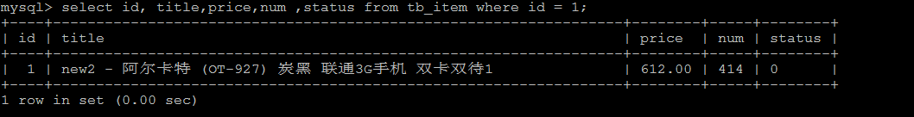
由于该语句执行时间很短，为0s ， 所以不会记录在慢查询日志中。
1 | select * from tb_item where title like '%阿尔卡特 (OT-927) 炭黑 联通3G手机 双卡双待165454%' ; |

该SQL语句 ， 执行时长为 26.77s ，超过10s ， 所以会记录在慢查询日志文件中。
3） 查看慢查询日志文件
直接通过cat 指令查询该日志文件 ：

如果慢查询日志内容很多， 直接查看文件，比较麻烦， 这个时候可以借助于mysql自带的 mysqldumpslow 工具， 来对慢查询日志进行分类汇总。

Mysql复制
复制概述
复制是指将主数据库的DDL 和 DML 操作通过二进制日志传到从库服务器中，然后在从库上对这些日志重新执行（也叫重做），从而使得从库和主库的数据保持同步。
MySQL支持一台主库同时向多台从库进行复制， 从库同时也可以作为其他从服务器的主库，实现链状复制。
复制原理
MySQL 的主从复制原理如下。
从上层来看，复制分成三步：
- Master 主库在事务提交时，会把数据变更作为时间 Events 记录在二进制日志文件 Binlog 中。
- 主库推送二进制日志文件 Binlog 中的日志事件到从库的中继日志 Relay Log 。
- slave重做中继日志中的事件，将改变反映它自己的数据。
复制优势
MySQL 复制的有点主要包含以下三个方面：
- 主库出现问题，可以快速切换到从库提供服务。
- 可以在从库上执行查询操作，从主库中更新，实现读写分离，降低主库的访问压力。
- 可以在从库中执行备份，以避免备份期间影响主库的服务。
搭建步骤
master
1） 在master 的配置文件（/usr/my.cnf）中，配置如下内容：
1 | #mysql 服务ID,保证整个集群环境中唯一 |
2） 执行完毕之后，需要重启Mysql：
1 | service mysql restart ； |
3） 创建同步数据的账户，并且进行授权操作：
1 | grant replication slave on *.* to 'itcast'@'192.168.192.131' identified by 'itcast'; |
4） 查看master状态：
1 | show master status; |

字段含义：
1 | File : 从哪个日志文件开始推送日志文件 |
slave
1） 在 slave 端配置文件中，配置如下内容：
1 | #mysql服务端ID,唯一 |
2） 执行完毕之后，需要重启Mysql：
1 | service mysql restart； |
3） 执行如下指令 ：
1 | change master to master_host= '192.168.192.130', master_user='itcast', master_password='itcast', master_log_file='mysqlbin.000001', master_log_pos=413; |
指定当前从库对应的主库的IP地址，用户名，密码，从哪个日志文件开始的那个位置开始同步推送日志。
4） 开启同步操作
1 | start slave; |

5） 停止同步操作
1 | stop slave; |
验证同步操作
1） 在主库中创建数据库，创建表，并插入数据 ：
1 | create database db01; |
2） 在从库中查询数据，进行验证 ：
在从库中，可以查看到刚才创建的数据库：

在该数据库中，查询user表中的数据：